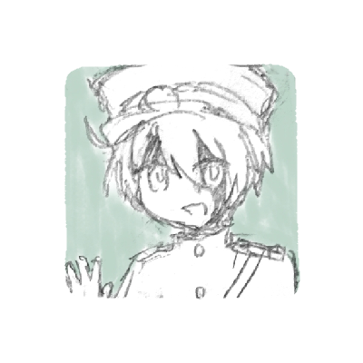

冥界
生者が立ち入ることの許されない、死者の国。成仏できなかった魂たちが暮らしている。 心をしっかり持って、自分を見失わないように。
＊ ＊ ＊
・無名の組織
名前を持たないが、その容姿や活動内容から冥界では一般的に"死神"と呼ばれている。 あまり人前で目立って活動することはない。 彼らのおかげで治安が悪い冥界でも暮らすことができる。

矢琉-(ヤル)
戦闘に強い。会話はあまり得意ではないが、素直。

日向和-(ヒナカ)
矢琉の相方。つかみどころがない。
天使化して記憶を失う。

葛来-(カズラ)
視力が高く、美しい目を持つ。狙われやすいため常に隠している。

梅桃-(ユスラ)
葛来の相方。カモフラージュのため目隠しをする。語気が強い。
・怪談処理会社
人的被害が出る怪談の処理を行っている。仕事の精神的負担が大きいため圧倒的人手不足。
・その他

夜咲-(ヨザク)
情報屋。かなり昔から冥界にいる。

窓野-(マドノ)
彼岸線の車掌。若くして死んだひとの記憶を食べるのが趣味。